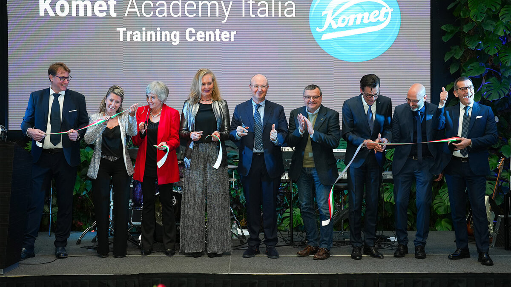
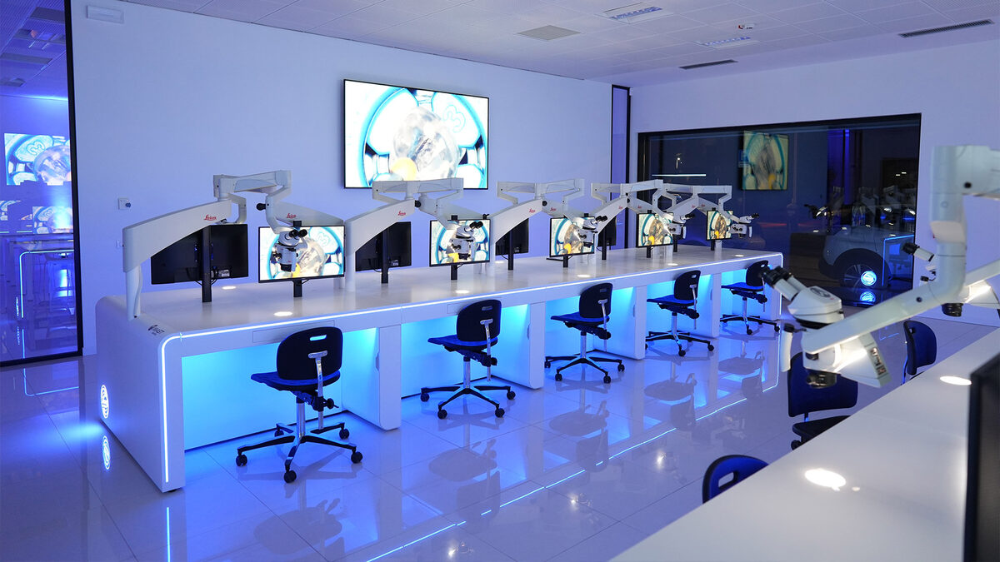

Brasseler strengthens its international presence – New milestones in the dental sector
Published on 23 January 2025
Lemgo, 23 January, 2025
The medical technology group Brasseler is consistently driving forward its global growth strategy. With the establishment of a new sales company in the UK and the opening of the Komet Academy in Italy, the company is starting the new year with significant milestones in the dental sector. These initiatives illustrate how Brasseler is strengthening its proximity to customers worldwide under the brand name Komet Dental and positioning itself in the field of continuing education.

“Internationalization is a central component of our strategy to consolidate our position as a partner in dentistry,” emphasizes Stephan Köhler, Chairman of Brasseler’s Management Board. “With targeted investments in customer proximity and advanced training programs, we ensure that we meet the needs of our customers and partners as effectively as possible.”
Foundation of Komet UK – customer service at the highest level
With the establishment of “Komet UK” on January 1, 2025, Komet Dental is expanding its presence in the UK and strengthening its direct support to dentists and dental technicians. The new sales company offers local access to high-quality products, a comprehensive advisory service and other services that are specifically tailored to the requirements of local customers.
A team of dental consultants in the UK is on hand for this, and customers can access a broad product portfolio and digital services via kometuk.com. The range is complemented by a close collaboration with established local distributors.

“With Komet UK, we are building an even closer connection to our customers in the UK,” explains Carsten Cieslik, Director of the Komet Dental business unit. “Our aim is to facilitate the daily work of our customers and permanently improve patient care through short distances and direct communication.”
Komet Academy in Italy – Innovation and Further Education Centre
At the beginning of January, the “Komet Academy” opened in Verona. Equipped with state-of-the-art technology, the facility is truly one of a kind. From the very start, the program offers more than 40 courses. The offering will gradually be internationalized, with the goal of establishing the Komet Academy as a global hub for leading dental professionals.
“Our vision is to create a platform where professionals can deepen their knowledge and learn from the best in the sector,” says Carsten Cieslik. “For us, quality not only means developing first-class instruments, but also accompanying our customers as partners and supporting them in mastering their everyday work in the best possible way.”
Covering over 500 square meters, the facility offers specialized areas and state-of-the-art technical equipment, including workstations with surgical microscopes and realistic practice models. The Academy complements Komet Dental’s global training program, which ranges from webinars and congresses to practice-orientated courses. It strengthens the company’s position as an international pioneer when it comes to providing professional training to the dental sector
Connected with Lemgo – Active in more than 100 countries
Brasseler is firmly linked to its headquarters in Lemgo and at the same time acts as a partner in the dental sector for more than 250,000 customers in over 100 countries. This combination of local production “Made in Germany” and a global vision is a decisive factor for Brasseler’s competitiveness.
“The proximity to our international customers and partners is just as important for the further development of our innovative solutions as the strong connection to our location in Lemgo,” summarizes Stephan Köhler. “Internationalization is the key to improving global patient care and ensuring the long-term success of our company.”
Apart from the dental sector, Brasseler is also globally active in the field of surgery. Under the brand Komet Medical, the company supports medical technology companies in the sectors of orthopaedics, traumatology, ENT and neurosurgery as well as dental implantology. The scope of services ranges from planning and development to complete production, sterile packaging and additional services.

Stephan Köhler, Chairman of Brasseler’s Management Board, and Carsten Cieslik, Director of the Komet Dental business unit, emphasise the strategic importance of the new milestones for the company’s international positioning in the dental sector.
Heidi O’Carroll, CEO of the new sales company Komet UK.

The official opening of the Komet Academy Italia was celebrated with a ceremonial ribbon-cutting, marking the start of the new training center in a festive atmosphere.

Modern and practice-oriented: the training room at the Komet Academy in Verona offers 20 workstations equipped with Leica M320 4K microscopes and fully equipped dental simulation units. An ideal environment for training courses that combine theoretical knowledge and hands-on applications.

Press contact
Laura Fuchs
Corporate communication
Phone +49 (0) 151 54087468
presse@brasseler.de